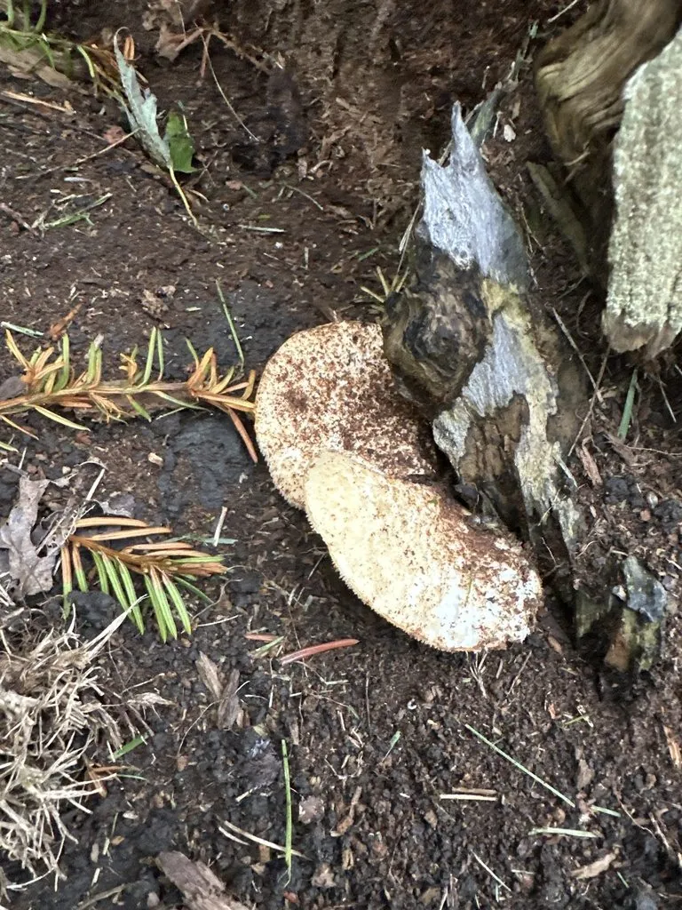

真菌 · 真菌界
白灵菇 Pleurotus nebrodensis

白灵菇通体洁白、菌盖厚实呈掌状，肉质紧实如鲍鱼，是珍贵的栽培食用菌，而野生种群已被列为极危物种。
- 分类
- 门担子菌门纲伞菌纲目伞菌目科侧耳科属侧耳属
- 栖息环境
- 野生时生于伞形科植物根部，栽培用木屑、棉籽壳等培养料
- 地理分布
- 野生仅见于地中海西西里岛等地，中国新疆等地有栽培
- 保护级别
- IUCN 极危（CR）；野生种群稀少，受采集与生境威胁
物种志
白灵菇是担子菌门侧耳科的真菌，子实体单生或丛生。菌盖呈掌状、漏斗状或半球形，直径 5–15 cm，表面白色至乳白色，光滑；菌肉白色、厚实紧致，是主要的食用部分。菌褶白色至淡黄色，延生于菌柄；菌柄粗短，偏生或侧生，白色。孢子印白色至淡黄色。栽培品的菌盖较小、菌柄更粗，野生个体则菌盖较大、呈漏斗状。
白灵菇野生于地中海西西里岛等地的伞形科植物根部，靠分解植物残体生长，野生种群数量极少，已被 IUCN 列为极危（CR）。中国新疆等地栽培的“白灵菇”多为本种或近缘的托里侧耳，用木屑、棉籽壳和麸皮作培养料，在低温条件下出菇。白灵菇肉质紧实、口感似鲍鱼，适合煎、烤、涮和炖汤；富含蛋白质、膳食纤维和多糖，是市场上价格较高的栽培食用菌。
形态与习性
- 菌盖掌状或漏斗状，直径 5–15 cm
- 颜色通体白色至乳白色
- 菌肉白色厚实，口感似鲍鱼
- 孢子印白色至淡黄色
- 野生生境伞形科植物根部，野生种群极稀少
- 保护级别IUCN 极危（CR）
- 食用性可食，肉质紧实
趣味知识
- 白灵菇野生种群极其稀少，被 IUCN 列为极危（CR）物种。
- 它的菌肉厚实紧致，吃起来有鲍鱼般的口感。
- 市场上卖的白灵菇几乎都来自人工栽培，不是野生采集。
- 栽培白灵菇需要低温刺激才能形成肥厚的子实体。